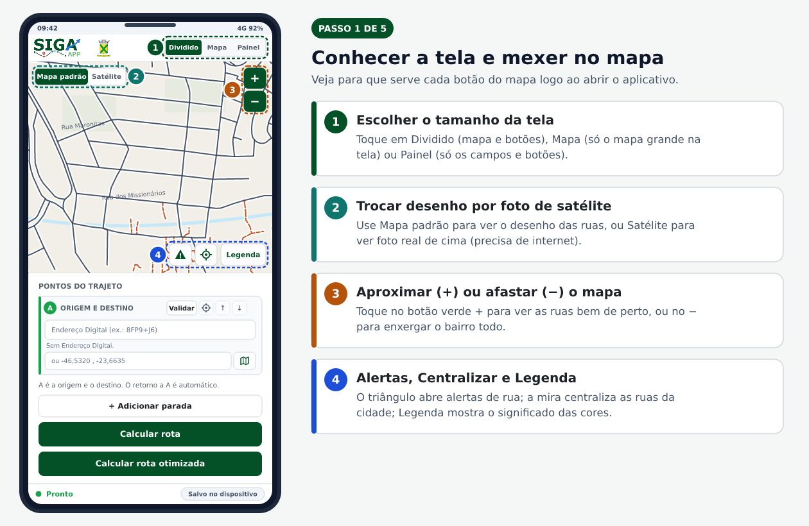
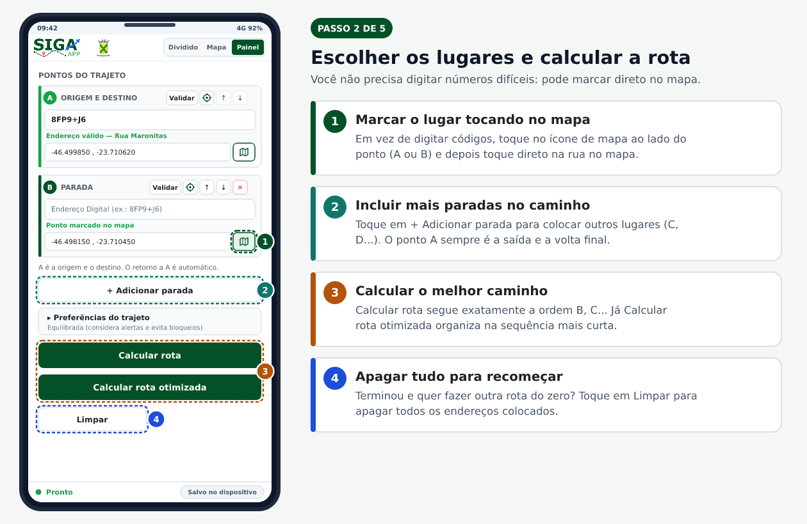
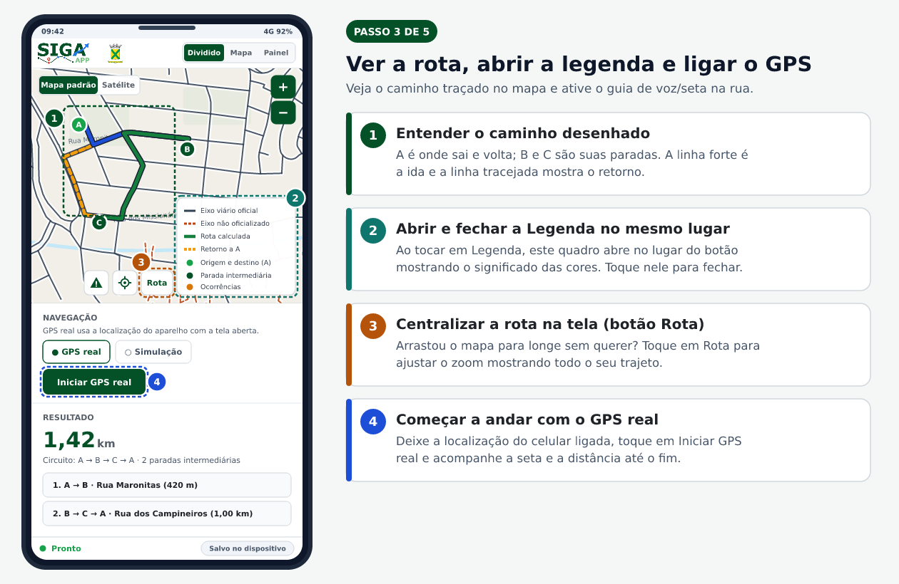
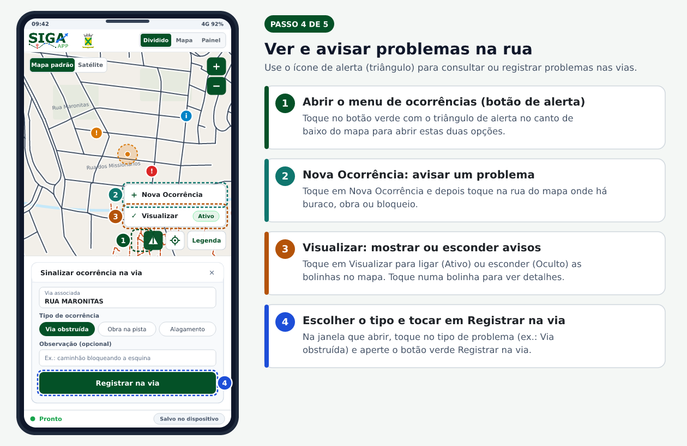
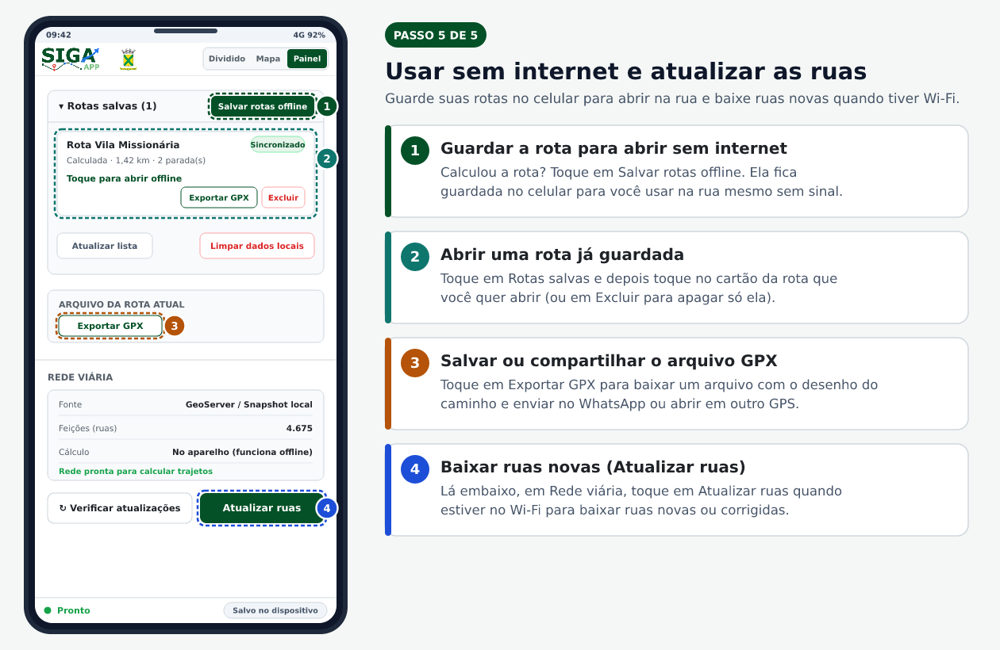

Manual Rápido de Uso
Guia simples e visual para montar rotas a pé pelas ruas de Santo André.
O que faz cada botão do mapa?
+ −
Zoom
Aproxima (+) ou afasta (−) as ruas do mapa.
Aproxima (+) ou afasta (−) as ruas do mapa.
Ocorrências
Abre as opções Nova Ocorrência (avisar problema) e Visualizar (mostrar/esconder avisos).
Abre as opções Nova Ocorrência (avisar problema) e Visualizar (mostrar/esconder avisos).
Centralizar rede
Volta o mapa para mostrar todas as ruas da cidade.
Volta o mapa para mostrar todas as ruas da cidade.
Legenda
Legenda das cores
Mostra o significado das linhas e pontos. Toque no quadro para fechar.
Mostra o significado das linhas e pontos. Toque no quadro para fechar.
Marcar no mapa
Deixa você escolher o endereço tocando direto na rua.
Deixa você escolher o endereço tocando direto na rua.
Conhecer a tela e mexer no mapa

- Escolher o tamanho da tela: toque em Dividido (mapa e botões juntos), Mapa (mapa grande) ou Painel (só a lista).
- Trocar desenho por foto: toque em Mapa padrão (desenho das ruas) ou Satélite (foto aérea, precisa de internet).
- Aproximar ou afastar: toque no + para chegar perto ou no − para afastar.
- Centralizar e ver cores: use a mira para voltar às ruas da cidade, Legenda para ver as cores e o triângulo para alertas.
Escolher os lugares e calcular a rota

- Marcar no mapa (mais fácil): toque no ícone de mapa ao lado do ponto A (ou B) e toque direto na rua no mapa. O ponto A é sempre sua saída e sua volta.
- Colocar mais paradas: toque em + Adicionar parada para incluir outros lugares (B, C…).
- Calcular o caminho: Calcular rota segue a ordem que você colocou; Calcular rota otimizada organiza na sequência mais curta.
- Recomeçar: toque em Limpar para apagar os endereços e começar outra rota.
Ver a rota, abrir a legenda e ligar o GPS

- Entender o desenho: A é onde sai e volta; B e C são as paradas. A linha forte é a ida e a linha tracejada é o retorno.
- Abrir e fechar a Legenda: toque em Legenda para abrir este quadro explicativo no lugar do botão; toque nele de novo para fechar.
- Centralizar o trajeto: toque em Rota para ajustar o zoom mostrando todo o caminho na tela.
- Ligar o GPS na rua: ative a localização do aparelho e toque em Iniciar GPS real, mantendo o aplicativo aberto durante a caminhada.
Ver e avisar problemas na rua

- Abrir o menu de alertas: toque no ícone do triângulo no canto inferior direito do mapa.
- Nova Ocorrência: toque aqui e depois toque na rua com buraco, obra, alagamento ou bloqueio.
- Visualizar: toque para mostrar (Ativo) ou esconder (Oculto) os avisos no mapa. Toque numa bolinha para ler detalhes.
- Registrar na via: escolha o tipo de problema e toque no botão verde Registrar na via.
Usar sem internet e atualizar as ruas

- Guardar para usar sem internet: depois de calcular, toque no botão verde Salvar rotas offline.
- Abrir rota salva: toque em Rotas salvas e escolha a rota guardada no aparelho.
- Exportar GPX: salva o arquivo do caminho no aparelho para guardar ou enviar a outra pessoa.
- Atualizar ruas: em Rede viária, toque em Atualizar ruas quando estiver no Wi-Fi para baixar ruas novas.
Ajuda rápida — “E se acontecer isso?”
Não sei digitar código ou coordenada: toque no ícone de mapa ao lado do ponto e toque direto na rua no mapa.
O mapa foi parar longe ou sumiu: toque na mira (centralizar) para voltar a Santo André, ou em Rota para enquadrar seu caminho.
Estou na rua sem internet: as rotas guardadas em Salvar rotas offline e o cálculo pelas ruas salvas continuam funcionando.
Quero fazer outro caminho do zero: toque em Limpar para apagar os pontos atuais.